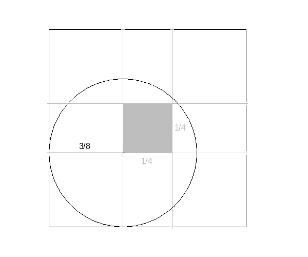

aez-notes
Coin in Square
In a common carnival game a player tosses a penny from a distance of about 5 feet onto the surface of a table ruled in 1-inch squares. If the penny (\(3/4\) inch in diameter) falls entirely inside a square, the player recieves 5 cents but does not get his penny back; otherwise he loses his penny. If the penny lands on the table, what is his chance to win?

Once this figure is generated it is clear that the answer is \(1/16\), so the problem here is how to construct this figure in maxima.
draw2d( fill_color = "white", color = "black", rectangle([0,0],[1,1]), fill_color = "grey", color = "grey", rectangle( [3/8,3/8], [5/8,5/8]), line_type = dashes, points_joined = true, points([0,1],[3/8,3/8]), line_type = dashes, points_joined = true, points([0,1],[5/8,5/8]), line_type = dashes, points_joined = true, points([3/8,3/8],[0,1]), line_type = dashes, points_joined = true, points([5/8,5/8],[0,1]), label(["1/4", 0.7 - 0.03, 0.5]), label(["1/4", 0.5, 0.3 + 0.03]), nticks = 500, color = "black", line_type = solid, transparent = true, ellipse(3/8,3/8,3/8,3/8,0,360), points([3/8,0],[3/8,3/8]), label(["3/8", 3/16, 3/8 + 0.03]), <<style-and-writeout>> )$
Style the layout of the whole figure and save it.
xrange = [-0.1,1.1], yrange = [-0.1,1.1], axis_bottom = false, axis_left = false, axis_top = false, axis_right = false, xtics = false, ytics = false, proportional_axes = 'xy, file_name = "problem-5", terminal = 'png